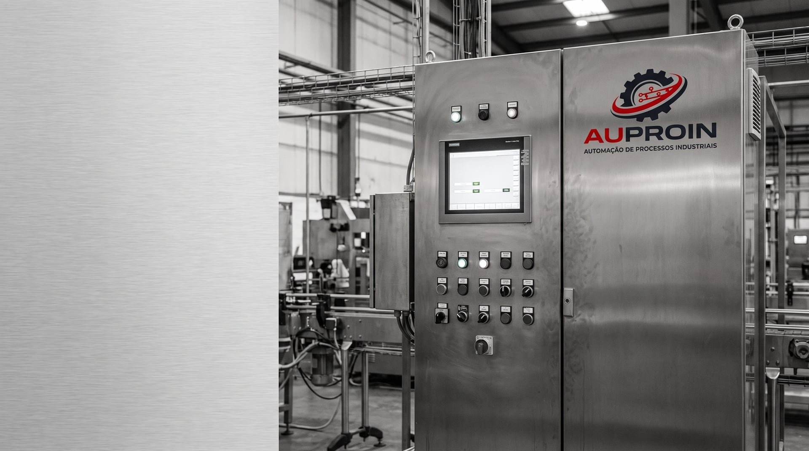

Automação industrial com engenharia própria,
a 30 minutos da sua planta
CLP, IHM e SCADA — projeto novo, retrofit, diagnóstico de falhas e adequação normativa para indústrias de Alumínio, Mairinque, São Roque, Votorantim, Araçariguama, Iperó, Sorocaba, Itu e região. 28 anos de experiência em plantas de grande porte, com responsabilidade técnica formal (registro ativo no CFT/CRT e emissão de TRT). Base em Alumínio/SP: atendimento no mesmo dia, sem custo de deslocamento de capital.

Programa de CLP sem backup, sem comentários e sem documentação — ninguém sabe o que a máquina faz.
Só o fabricante original consegue mexer no equipamento, e cada chamado custa caro e demora.
Parada crônica que se repete há meses e ninguém consegue provar a causa.
CLP ou IHM obsoletos, sem peça de reposição no mercado.
Máquina antiga sem adequação à NR-12, travando auditoria ou liberação de seguro.
Supervisório com centenas de alarmes que o operador aprendeu a ignorar.
Comando por relés e contatores, sem diagnóstico algum para a manutenção.
Dados de processo existem, mas não viram indicador de produção nem de consumo.
Programação de CLP, IHM e SCADA
Projeto novo, retrofit e migração de plataforma. Lógica de intertravamento, sequenciamento e diagnóstico; alarmes e telas que a operação consegue usar.
Ver serviço → 02Retrofit e modernização de máquina
Comando por relés, CLP ou IHM obsoletos e máquina sem NR-12: nova arquitetura CLP + IHM com a lógica reconstruída e documentada.
Ver serviço → 03Projeto elétrico e de painéis
Painéis de comando, distribuição e potência — bloco, unifilar e multifilar — com dimensionamento e especificação conforme NBR 5410, NBR IEC 61439 e NR-10.
Ver serviço → 04Comissionamento e start-up
Comissionamento a frio e a quente, loop check, testes ponto a ponto, start-up assistido e apoio em parada programada.
Ver serviço →Do levantamento ao start-up, com um único responsável técnico
Engenharia, programação e documentação executadas remotamente; presença em campo nas fases de levantamento, comissionamento e start-up. Entrega documentada em todos os formatos: backup do programa comentado, lista de I/O, descritivo funcional e relatório de comissionamento.
Documentação para acesso a planta: CNPJ ativo, NR-10 e SEP, NR-12, NR-35, ASO e registro CFT/CRT vigentes, com emissão de TRT.

Comece por um Diagnóstico de Automação
Um dia na sua planta, relatório técnico em até cinco dias úteis, escopo e valor fechados antes do início. O relatório é seu, com ou sem contratação da execução.
Quanto tempo leva um Diagnóstico de Automação?
Um dia na sua planta e relatório técnico em até cinco dias úteis. O escopo e o valor são fechados antes do início, e o relatório é seu com ou sem contratação da execução.
A AUPROIN atende quais cidades?
Base em Alumínio/SP, com atendimento presencial em Mairinque, São Roque, Votorantim, Araçariguama, Iperó, Sorocaba, Itu e demais cidades da região — deslocamento em até 30 a 50 minutos. Para projeto e comissionamento há disponibilidade para viagem em todo o Estado de São Paulo.
Dá para modernizar uma máquina antiga sem o programa e sem a documentação do fabricante?
Sim. O trabalho começa por levantamento em campo e engenharia reversa da lógica existente, que vira descritivo funcional aprovado antes de programar. Foi assim em máquina comandada por relés, com 196 pontos de I/O mapeados e 98 alarmes classificados por ISA-18.2.
Existe responsabilidade técnica formal pelo serviço?
Sim. O responsável técnico tem registro ativo no CFT/CRT (270698738-32), com atribuição para responsabilidade técnica e emissão de TRT dentro das atribuições do técnico em eletrotécnica.
Quais plataformas de CLP e SCADA são atendidas?
CLP Siemens S7-1200, S7-1500, S7-300/400, S7-200 e ET200SP (TIA Portal, STEP 7 e MicroWin) e Delta série AS. SCADA e IHM: WinCC RT Professional, AVEVA InTouch, GE iFix, IHM Siemens KTP, Weintek e Delta. Redes Profinet, Profibus-DP, Modbus TCP, AS-i e IO-Link.
Como funciona a contratação?
Por escopo fechado (preço e prazo definidos por projeto), por diária de campo ou hora técnica para comissionamento e parada programada, ou por contrato mensal de retenção com horas reservadas para suporte e sustentação.
Máquina comandada por relés vira máquina com CLP, IHM e diagnóstico
Ler a ficha → Ficha 02 · Diagnóstico de paradas e falhas crônicas 28 condições na matriz de primeira causaParada de emergência com 28 causas possíveis, identificada em segundos
Ler a ficha → Ficha 03 · Projeto, montagem e comissionamento 6 CLPs 4 IHMs e 2 sistemas SCADADo diagrama unifilar à planta produzindo: projeto, montagem e start-up
Ler a ficha → Ficha 04 · Dados de processo e indicadores 25% de redução no modo de falha alvoDados que já existiam na máquina, transformados em indicador e em menos perda
Ler a ficha →Experiência construída em CBA (Alumínio/SP), Gerdau Aços Longos e Moxba Metalúrgica do Brasil (Araçariguama/SP), além dos projetos próprios da AUPROIN.